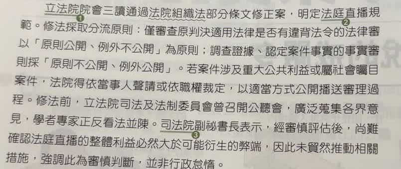

分享原卷｜第 5 題
完整原題
作答所需文章／材料
【法庭直播規定三讀通過】 立法院院會三讀通過法院組織法部分條文修正案，明定法庭直播規範。修法採取分流原則：僅審查原判決適用法律是否有違背法令的法律審，以「原則公開，例外不公開」為原則；調查證據、認定案件事實的事實審則採「原則不公開，例外公開」。若案件涉及重大公共利益或屬社會矚目案件，法院得依當事人聲請或依職權裁定，以適當方式公開播送審理過程。修法前，立法院司法及法制委員會曾召開公聽會，廣泛蒐集各界意見，學者專家正反看法並陳。司法院副祕書長表示，經審慎評估後，尚難確認法庭直播的整體利益必然大於可能衍生的弊端，因此未貿然推動相關措施，強調此為審慎判斷，並非行政怠惰。文中法律的修正，屬於哪兩種權力制衡的關係？
(A) 司法權制衡立法權
(B) 立法權制衡行政權
(C) 司法權制衡行政權
(D) 立法權制衡司法權
先想一想，再查看答案、解說與原圖
原卷作答：A
正確答案：D。立法院運用修法權，規範法院的審理公開制度，是題目要辨識的立法對司法的制衡。
逐項解析
| 選項與原句 | 判讀 | 句意與判斷理由 |
|---|---|---|
| (A) 司法權制衡立法權 | 不選 | 本題的動作是立法院修法規範法院運作，並非法院審查法律是否違憲。 |
| (B) 立法權制衡行政權 | 不選 | 被規範的是法院審理與公開播送制度，不是行政院施政。 |
| (C) 司法權制衡行政權 | 不選 | 本題不是法院審查行政處分或行政機關違法。 |
| (D) 立法權制衡司法權 | 應選 | 立法院運用修法權，規範法院的審理公開制度，是題目要辨識的立法對司法的制衡。 |
詳細說明與解題步驟
一、先找誰在做事
原文說立法院院會三讀通過法院組織法部分條文修正案。立法院制定、修正法律，屬立法權。
二、再找法律規範的對象
修正內容是法庭審理的公開播送，涉及法院行使司法權時的程序。因此方向是立法權規範司法制度，選D。
三、把修法與個案審判分開
國會可以依法制定法院組織與訴訟程序的一般規則；這不表示立法委員可以指揮法官在某一件案件判誰勝敗。法官仍須依法獨立審判。
四、不要把反方向的制度混在一起
如果是法院審查法律是否違憲，才會涉及司法權對立法權的制衡。這題問的是修法這個動作，不是對該法律所提的違憲審查。
核對依據：憲法第63、80條；原題新聞作為閱讀材料保留，不把其中三讀時點的描述當作最新施行狀態。
https://law.moj.gov.tw/LawClass/LawSingle.aspx?pcode=A0000001&flno=63
https://law.moj.gov.tw/LawClass/LawSingle.aspx?pcode=A0000001&flno=80
核對註記：使用者確認OK：答案D，展示原來源後續訂正版AI圖，舊版B錯圖不採用。
原圖（僅本題）
